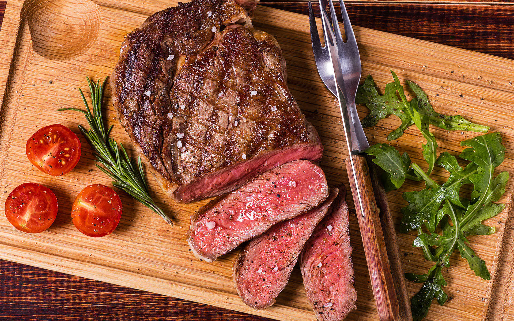

Hei, eg heiter Kristian!
Her er ein side om meg og mine store interesse ovenfor temaet MAT. Eg har vokst opp med mat generelt heile livet mitt, men det betyr IKKJE at eg er flink på kjøkkenet. Dette har desverre blitt eit problem med eit begrenset student budsjett.
Eg er liksom alt for glad i mat, det er eit problem. Største grunnen til eg begynte med trening var bare for å kunne ete meir mat, og halveis holde meg i grei form. Mest for å ete meir mat då. Vippsen min er 913 84 526, viss nokon vil donere litt.
Enda meir om meg (får aldri nok)Litt meir om meg
Som du kanskje fikk vite ovenfrå, så heiter eg Kristian. Eg er ein gutt frå den flotte byen Førde (Tydlegvis kåret til Norges styggeste by). Veit ikkje kor sant det er, men det er noko eg liker å seie når eg introduserer byen Førde. Det er også eg som har laget ditta flotte siden.
Eg er meget glad i blå, viss du ikkje kunne sjå det, men ja eg liker blå veldig godt. Ikkje like masse som eg liker mat då, ingenting slår mat i augene mine. Heldigvis er mat noko vi trenger for å leve så ingen kan i teorien kritisere meg på den. Mat er faktisk top 3 ting som eksisterer.
Eg valgte derfor å dedikere denne siden til mine store interesse for mat. Det er sjeldent eg får muligheten til å nevene mat som min interesse slik som dette. Eg håper og virkelig at denne siden min kan vekke litt mere interesser for mat. Vil anbefale å sjå Masterchef, meget bra show. Den med Gordon Ramsay.
Min store interesse for mat
Mat sin største fiende?
Eg har vore veldig interessert i mat heilt sidan eg var liten. Medan mange andre barn vaks opp med vanlege barneprogram, sat eg heller og såg på MasterChef.
Og då snakkar eg ikkje berre om den amerikanske versjonen. Eg såg også MasterChef Australia og andre variantar av programmet. Det var noko med å sjå folk lage rettar som eg mest sannsynlig ikkje ville få muligheten til å smake
Til den dagen i dag så er eg fortsatt meget glad i sjå på matlaging. Frå Masterchef, til bare generelle matlagings videor på youtube. Eg har til og med kjøpt kokebøker (som eg egentlig ikkje har rørt), faktisk lastet ned matlagings apper, som har overkompliserte oppskrifter
Eg trives egentlig generelt på kjøkkenet som kjæresten min setter pris på. P.S hun er ikkje den flinkeste på kjøkkenet så hun setter pris på eg er heilt grei på kjøkkenet.

Kva likar eg å gjere på fritida?
Når eg ikkje sitter å tenker på mat så har eg faktisk nokon hobbyer.
Trening
Eg likar å vere aktiv og halde meg i form. Det gir meg sjansen til å ete meir mat, og eg har bare generelt blit glad i å trene no.
Tenke på mat
Eg blir aldri lei av å tenke og sjå på mat. Eg er nr.1 mat entusiast som finnes. Dette har ført til mat forgiftning eit par ganger.
Teknologi
Vil seie at det forklarer seg, med tanke på at eg går dataingeniør studiet. Har bare alltid vore interessert i det. Nokon var født med ski på beina, eg var født med fjeset mitt limt til pc skjermen Så dette vart det perfekte studiet for meg.
Nokre raske fakta om meg
Her er ei lita oversikt over nokre ting som beskriv meg.
| Kategori | Om meg |
|---|---|
| Namn | Kristian Adison Berger-Nilsen |
| Utdanning | Førsteårsstudent på høgskulen |
| Stor interesse | Mat og matlaging |
| Favorittprogram som barn | MasterChef |
| Fritidsinteresser | Trening, teknologi og venner |
| Største utfordring | Å kombinere matglede med studentbudsjett |